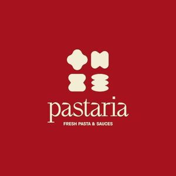

Trade Mark Journal No.2025/039 26 September 2025
WO0000001859272 (30,35,43)
Office of origin: Albania
Date of International Registration:13 September 2024
Date of designation in the UK:
13 September 2024

The mark consists of four stylized geometric figures forming devices as macaroni, placed in two lines two by two. Below them the stylized word PASTARIA is placed, below it the stylized expression FRESH PASTA & SAUCES is placed. All elements are in beige whereas the background is in red.
Protection of this mark shall give no exclusive rights to use of the words 'FRESH PASTA & SAUCES'
The mark contains the colours red and beige.
The background is in red, whereas the elements of the mark are in beige.
International priority date claimed: 13 March 2024
(Albania)
- Class 30
- Dried and fresh pastas, noodles and dumplings; dried noodles; dried pasta; dried pasta foods; edible flour; egg noodles; egg pies; filled baguettes; filled bread rolls; filled buns; filled pasta; filled sandwiches; flat bread; french toast; fresh bread; fresh pasta; fresh pasties; fresh pies; fresh pizza; fruit breads; fruit cakes; fruit filled pastry products; fruit pastries; noodle-based prepared meals; noodles; pasta; pasta products; pasties; sauces for pasta; creamy ice cream sauces; savory sauces used as condiments; tomato-based sauces; fruit-based sauces; garlic-based sauces; rocoto sauce [condiment]; cranberry sauce [condiment]; tartar sauce; spicy sauces; hot sauces; pizza sauces; fish sauces; spaghetti sauces; steak sauces; rice sauces; sweet sauces; chocolate sauces; caramel sauces; concentrated sauces; tomato sauce; chili sauce; sweet and sour sauce; sauces [condiments]; sauce mixes; salad dressings.
- Class 35
- Business administration; business management assistance; franchising, namely providing commercial assistance in the establishment and/or operation of restaurants and snack bars; retail store services connected with the sale of food, beverages, tableware, kitchenware, travelling bags, shopping bags, handbags; the bringing together, for the benefit of others, of a variety of goods (excluding the transport thereof) of food, beverage, housewares, and kitchenware, enabling customers to conveniently view and purchase those goods through website specializing in marketing for selling the goods of others; on-line retail store services connected with the sale of food, beverage, housewares, and kitchenware.
- Class 43
- Food decoration services; food preparation information and advisory services; snack bar services; fast food bar services; catering services; home chef services; restaurant services; self-service restaurant services; restaurant services with the take-away system; restaurant services with the delivery system; temporary accommodation.
EDAL GENERAL
Representative: Irma Cami, HERMELIKA 03920125;, Nd. 1; H. 36; Ap. 25;, KASHAR; YZBERISH; 1050, TIRANA, ALBANIA